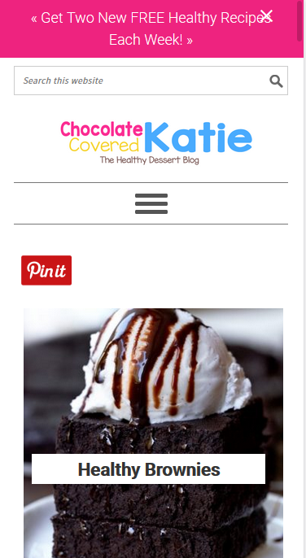
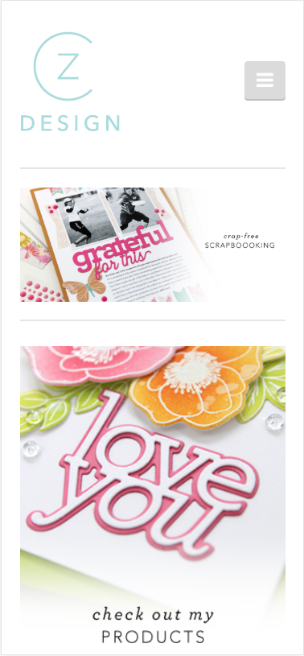

Repetition
Chocolate Covered Katie
chocolatecoveredkatie.com
Chocolate Covered Katie uses the principle of repetition on her website. The colors of her site title are repeated in various places throughout the page. It begins with the header of her page. The color of the header is also the color of the buttons on the main page and the color of the links.
The colors of her site title are also tied into the colors of the buttons on her navigation bar. The repetition even goes as far as matching the colors of her profile image and her cookbook.
It’s a great example of repetition and how using color throughout the site ties everything together.
Contrast
Dress Barn
dressbarn.com
Dress Barn’s website uses the principle of contrast. Their use of contrast is not only in color, but in typography as well.
The bold color of red is contrasted with the colors of black and white. Both these colors stand out in their respective ways like they are designed to here. The value of the colors is distinctly different from that of the red.
The contrast of the typography is in the way the black typeface is different that the white. While both are serif typefaces, the white is italicized and thus making it different from the black writing in two ways.
The body text and the “SHOP NOW” in the red section are made with a san-serif typeface. This is a direct contrast to the serif typeface above. That is a very common design principle.
White Space and Clean Design
Cathy Zielske
cathyzielske.com
When thinking about white space and clean design, I always think of Cathy Zielske. She is known for it. It is no surprise that her website is styled in the same way. The white space and clean design are pleasing and comforting to the eyes.
There is an ample amount of padding around the images and other design elements. The site isn’t “busy.” There is a lot of neutral colors throughout the page. The color that is used is not overbearing. These help keep it nice, clean, and uncluttered.